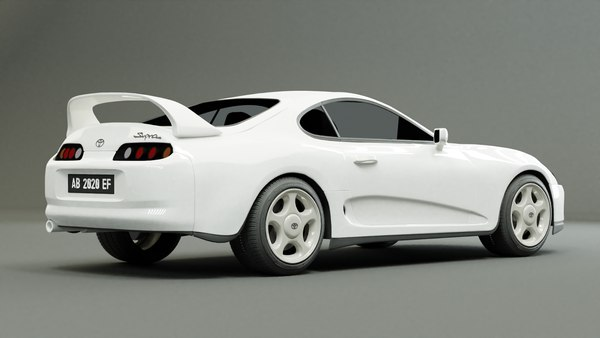
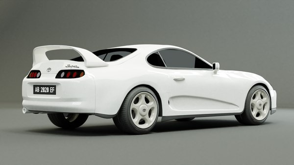

Nissan VS Toyota

Битва за японское лидерство
Nissan и Toyota – два крупнейших японских автопроизводителя, чьи корни уходят в первые десятилетия XX века. Их влияние на мировую автомобильную индустрию огромно, а внутреннее соперничество только усиливало технический прогресс. Их борьба охватывает не только гражданские автомобили, но и автоспорт, где обе компании демонстрировали амбиции и инженерные достижения. Каждая из них стремилась предложить покупателям нечто особенное: Toyota – практичность и надежность, Nissan – инновации и драйв.
Начало конкуренции (1950–1980)
В середине XX века, когда Япония начала активно развивать свой автопром, Toyota и Nissan уже считались ведущими производителями. Страна восстанавливалась после войны, и спрос на доступные автомобили рос с невероятной скоростью. Toyota делала ставку на универсальность, доступность и долговечность , тогда как Nissan предпочитал технологичность и инновации.
- Toyota Crown (1955) стал первым японским седаном, который получил популярность внутри страны. Эта модель заложила основу для будущего успеха компании в сегменте представительских автомобилей.
- Nissan Cedric (1960) – ответный шаг Nissan, конкурирующий с Crown. Cedric позиционировался как более элегантная и технически продвинутая альтернатива.

Обе компании стремительно расширяли модельный ряд, предлагая не только седаны, но и компактные автомобили, грузовики и внедорожники. Уже тогда было понятно, что Toyota постепенно захватывает массовый рынок, а Nissan ищет способы выделиться за счёт технических новшеств. Эта разница в подходах сохраняется и по сей день.
Спорткары

Главное противостояние между Nissan и Toyota разгорелось в спортивном сегменте, где обе компании стремились продемонстрировать своё превосходство. В 1960-е годы японский автоспорт начал стремительно развиваться, и обе марки решили принять в нём участие.
- Nissan Skyline GT-R (1969) – мощное купе с задним приводом и рядной "шестёркой", доминирующее в японских гонках. Это был автомобиль, который сразу заявил о себе на треке, завоевав множество побед.
- Toyota Supra (1978) – ответ Toyota в виде мощного спорткара, который
 Nissan Skyline R34с каждым поколением становился быстрее. Supra изначально создавалась как конкурирующая модель с большим потенциалом для модификаций.Toyota Supra Mk4
Nissan Skyline R34с каждым поколением становился быстрее. Supra изначально создавалась как конкурирующая модель с большим потенциалом для модификаций.Toyota Supra Mk4
В 1990-х годах битва между Nissan Skyline GT-R (R32-R34) и Toyota Supra (A80) достигла пика. Supra отличалась огромным потенциалом для тюнинга, её двигатель 2JZ-GTE мог выдерживать невероятные нагрузки и легко разгоняться до 1000+ л.с. Skyline, в свою очередь, имел передовую систему полного привода ATTESA и мощный RB26DETT, что делало его королём японских гонок.


Эти два спорткара стали культовыми, а их соперничество продолжилось и в 21 веке с выходом Nissan GT-R (R35) и Toyota Supra (A90). Несмотря на то, что новая Supra использует платформу BMW, её дух и предназначение остались неизменными. А GT-R до сих пор остаётся одним из самых быстрых серийных автомобилей в мире.
Внедорожники
Внедорожное противостояние Toyota и Nissan не менее важно, ведь обе компании внесли огромный вклад в развитие мирового сегмента SUV. Эти автомобили стали не просто транспортом, а настоящими легендами бездорожья.
- Toyota Land Cruiser (1951) – легенда бездорожья, ставшая эталоном надежности. Этот внедорожник использовался как армейский транспорт, а затем стал популярен среди путешественников, фермеров и военных.
- Nissan Patrol (1951) – главный конкурент, способный соперничать с Land Cruiser по проходимости. Patrol был мощным и удобным, предлагая отличную альтернативу Toyota.
Land Cruiser зарекомендовал себя как король бездорожья, особенно в версиях 70-й, 80-й
Современные версии (LC300 vs Patrol Y62) продолжают эту борьбу: Land Cruiser остаётся консервативным, но ультранадёжным, а Patrol делает ставку на мощность и комфорт. Toyota сохраняет
Автоспорт
Toyota и Nissan также конкурировали в мировом автоспорте, хотя их подходы были разными. Nissan всегда делал ставку на агрессивные и рискованные решения, тогда как Toyota предпочитала методичное развитие своих технологий.
- Nissan участвовал в гонках Le Mans с моделями R90C, R390 GT1 и GT-R LM Nismo. Несмотря на амбиции, компании так и не удалось добиться больших успехов.
- Toyota доминирует в современной эпохе WEC и Le Mans с гиперкарами GR010 Hybrid. В отличие от Nissan, Toyota смогла довести свою программу до побед.

В 1990-х обе компании пытались завоевать 24 часа Ле-Мана, но успеха добилась только Toyota в 2018 году, когда победила с TS050 Hybrid. Nissan так и не выиграл эту гонку, но его автомобили навсегда вошли в историю благодаря инновационному дизайну и агрессивному стилю управления.
Современное противостояние
Сегодня Toyota остаётся крупнейшим автопроизводителем Японии, контролируя большую часть мирового рынка. Её автомобили славятся надежностью, долговечностью и экономичностью, что делает их предпочтительным выбором миллионов покупателей. Nissan, несмотря на финансовые трудности, продолжает выпускать уникальные модели, такие как GT-R и Z, а также делает упор на электромобили (Ariya, Leaf).
Хотя Toyota выигрывает по масштабам, Nissan остаётся символом японского инженерного духа и спортивных достижений. Их противостояние продолжается и сегодня, но в новых формах – электрификации, гибридных технологиях и автоспорте. Каждая из компаний имеет свою уникальную философию, и именно это делает их соперничество таким интересным.